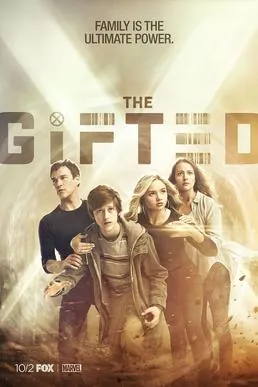

The genetics
The series uses mutation as a metaphor for minority status. Its mutants are people with innate powers that may surface unexpectedly in adolescence, and Polaris struggles to accept her 'birthright' as Magneto's daughter; the story concerns how society treats them rather than the science behind them. A government agency hunts and detains mutants, a supremacist movement seeks to purge them, and radical mutants answer with violence, so the series explores persecution, surveillance and loss of rights, with explicit parallels to the Underground Railroad and Nazi Germany. The available sources describe no genetic research or engineering in any detail; a Sentinel Services researcher appears among the antagonists. Real mutations cannot give people superpowers, but the series' concern with discrimination based on inborn differences echoes real debates about genetic discrimination.
How genetics is portrayed
- Overall portrayal of genetics
- negative The antagonists, Sentinel Services and the Purifiers, persecute people for an inborn genetic difference, framed as oppression with explicit Nazi parallels; the negative impression is indirect, through hereditarian prejudice.
- Outcome of the genetic intervention
- not applicable The sources describe no genetic work; mutants are born with their powers and the conflict is about how society treats them.
The story
Set in the X-Men universe, this series follows Reed Strucker, a district attorney who prosecutes mutants, and his wife Caitlin, a nurse, who discover that their teenage children, Lauren and Andy, are mutants with powerful abilities. When the children's powers are exposed, the family is hunted by Sentinel Services, a government agency that detains mutants in harsh camps, and goes on the run. They join the Mutant Underground in Atlanta, a network modelled on the Underground Railroad, led by Thunderbird with Eclipse, Blink and Polaris, Magneto's daughter. Agent Jace Turner pursues them, torn between protecting society and violating mutant rights. After an attack at an Atlanta station, some members defect to the more radical Inner Circle of Reeva Payge. In the second season the Underground confronts both the Inner Circle and the Purifiers, a human supremacist movement that Turner eventually joins. Fox cancelled the series after two seasons.